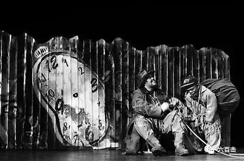

为什么要跨年
因为2017变成了2018
这个变化引发了我们对于时间的焦虑
时间在每一分每一秒中前进
但是现代人已经忙碌麻木到失去了时间知觉
只有在跨年这样的时刻
才能够引起我们对于时间流逝的恐慌
我们掌控不了2017变成2018
所以我们只能用18岁这个梗来证明曾经拥有
但是18岁已是过去
既然无法永远拥有青春
那就努力赋予“时间”意义
于是就有了跨年
我们希望跨年就是告别屌丝拥抱成功
我们就产生了改变的焦虑和压力
时间一年一年过去
不论我们最终能否改变
我们也永不满足
没有真正的满足
时间就没有了意义
没有了意义
那就只能及时行乐
于是跨年变成了胡吃海喝和油腻的聚会
我们抓不住过去
也无法掌控未来
拥抱当下的放纵之后更是灵魂的空虚
其实跨年我们一点也不开心
时间对于我们没有任何盼望
事实上
我们从来没有思考过为什么要有时间
时间是否真的有意义
生物学告诉我们时间的推进就是走向死亡
这里的时间是走向坟墓的时间
马克思历史唯物主义告诉我们
时间的推进是为了建立人间乌托邦
这样的时间是没有人性的时间
因为它狂傲地碾压了个体
不论你多伟大
在滚滚历史红尘中
你只是其中不起眼的一粒沙土
忽然我们发现
我们已经迷失在时间中
我们发现自己变成了戈多
在时间中
我们并不知道我们为什么在这里
我们也不知道我们要等待什么
更不知道我们要等待的东西何时会出现
唯一知道的是我们在等待
时间是无望的
跨年更是这潭空虚死水荡起的涟漪

直到有一天我们发现
等待戈多的原意是Waiting For Godot
才知道我们在等待god （Godot暗喻）
于是时间才有了意义
因为我们找到了时间的主人——上帝
在他所创造的时空中
我们的生活才有了意义和希望
原来我们并不是在时间中沉沦
而是在时间中盼望
在时间中等待救主再临
2017变成2018
不是失去和变老
而是离上帝更近
这才是跨年的真正意义
关注并回复：跨年 获取神秘礼物
相关推荐：
《芳华》| 他那么好却被伤的如此之深
《潜行者》 | 这是全人类绝无仅有的电影了
《乡愁》 | 没有一个人能够将信仰拍的如此诗意和凝重
这里没有挑逗你眼目情欲的小鲜肉
也没有挑动你肉体情欲的段子
更没有膨胀你今生骄傲的鸡血
我们只在乎那些最质朴真诚的作品
在那里我们才能恢复真正的想象力
我们也坚信这才是我们真正需要的

ID:Six_hundred_hits
长按二维码，一键关注
【六百击】
-END-
电影评论
尽情分享朋友圈

苹果打赏通道